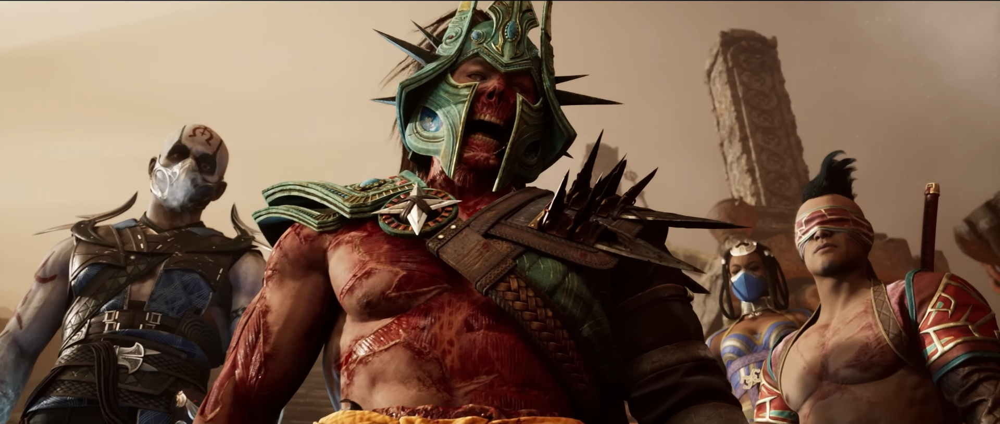

Короткий опис гри Mortal Kombat 1
Mortal Kombat 1 — комп'ютерна гра у жанрі файтинг, розроблена студією NetherRealm Studios і видана Warner Bros. Games. Це дванадцята частина основної серії Mortal Kombat. Гра стала доступною для попереднього замовлення 14 вересня 2023 року, повний реліз відбувся 19 вересня.
Гра є ріквелом. Вона продовжує історію попередньої частини, проте події Mortal Kombat 1 відбуваються в новій часовій лінії, переосмислюючи деякі події з попередніх ігор серії.
Системні вимоги та технічні характеристики Mortal Kombat 1:
- 64-бітна Windows 10.
- Процесор Intel Core i5-6600, AMD Ryzen 3 3100 або Ryzen 5 2600.
- 8 ГБ оперативної пам'яті.
- Відеокарта Nvidia GeForce GTX 980, AMD Radeon RX 470 або Intel Arc A750.
- 100 ГБ вільної пам'яті.
"На даном малюнку зображені основні персонажі, які були добавлені при виході гри"
Сюжет гри Mortal Kombat 1 (Скорочена версія)
Початок нової ери
У фіналі попередньої частини герої боролися із титаном Кронікою, яка керувала часом та намагалася видалити нашу реальність. Тоді богиню вдалося зупинити, і Лю Кан та Шан Цзун розпочали боротьбу за її могутність. Переможцем вийшов добрий персонаж.
З новою силою Лю Кан створив нову реальність, де Шан Цзун займається невеликим шахрайством, а герої насолоджуються мирним життям. При цьому Рейден став звичайним людиною, Кун Лао ще не перетворив свій капелюх у зброю, а Кенші зберіг зір. Однак базові правила залишились незмінними: Земельне царство і Зовнішній світ все ще змагаються на тому самому турнірі.
Після створення Лю Кан відмовився від своїх сил і став захисником Земного царства. На початку гри він шукає бійця для нового турніру, кандидатами стають Кун Лао, Рейден, Джонні Кейдж та Кенші. Перед початком тренувань Лю Кан перевіряє героїв, наприклад, Рейден і Кун Лао захищають таверну від бандитів, роль яких виконали Саб-Зіро, Скорпіон і Смоук.
Кращим земним бійцем визначають Рейдена. У кінці він вирушає на турнір, знайомиться з господинею Зовнішнього світу Сіндел та перемагає її бійців.
Зав'язка сюжету
Сіндел стала правителькою після смерті свого чоловіка Джеррода. Той дружив з Лю Каном і підтримував турнір – нова госпожа дотримується тієї ж думки. Але, на жаль, в неї багато проблем: союзники, такі як генерал Шао, переконують у злих намірах Лю Кана, а в царстві бушує нова хвороба.
Незабаром Лю Кан зустрічається з Герасом. Цей персонаж дбає про порядок у всій часовій лінії і розповідає про коварні плани Шан Цзуна. На початку гри чаклун був аферистом, але потім зустрів таємничу злочинницю, повернувся до злодіяній і вкрався в довіру до Сіндел. Також він зіткнувся зі злим чаклуном Куан Чі, обраного тією ж могутньою дамою.
Щоб розібратися у всьому, Лю Кан відправляє Кейджа, Кенші та Кун Лао на пошуки Шан Цзуна. Герої зустрічають чаклуна в колонії заражених. Виявляється, що хвороба перетворює людей в монстрів, з тіла яких Шан Цзун відбирає спинний мозок. Наступним експериментом стає Барака. Бійці кидаються на злочинця, але той змінює зовнішність і втікає.
Об'єднавшись з Баракою, герої вирушають за ворогом і знаходять його в лабораторії. Там на столі лежить спадкоємиця Зовнішнього світу Міліна, а навколо неї обертається Шан Цзун із шприцем.
Всі впевнені, що чаклун незабаром заразить спадкоємицю, тому починається бійка. Але виявляється, що в шприці було ліки – без них Міліна перетворюється на монстра, проколює очі Кенші, а тільки потім отримує цілющий укол. У лабораторію прибувають люди Сіндел, які нокаутують землян.
Герої приходять до тями в іншій лабораторії Шан Цзуна, де проводять жахливі експерименти. Виявляється, що за допомогою хвороби Міліни злочинець вкрадався в довіру до Сіндел і клеветав на Лю Кана.
За в'язницею стежить Сайзот, відомий під прозвищем Рептилія. Він тут не за власним бажанням: Шан Цзун узяв його сім'ю в заручники. Невдовзі Сайзот дізнається, що його рідня давно мертва, і втікає разом із бійцями Лю Кана.
По дорозі герої зустрічають Куан Чі, який проводить обряд. Він вивільняє безліч душ і заодно створює Ермака. Цей боєць легко розкидає героїв, але потім починає бій із осліпшим Кенші. Цей герой всю гру сварився з Джонні Кейджем, який придбав сімейний меч його родини. Перед боєм актор віддає клинок – зброя повертає Кенші зір і дарує силу. Мечник перемагає Ермака, після чого вся команда повертається до Лю Кана.
Розв'язка сюжету
Лю Кан направляється до Сіндел, яка попалася на хитромудрі замовляння злочинців і розпочала атаку на Земне царство. Завдяки підтримці Лі Мей (стражниці і подруги правительки) він розкриває змову та зупиняє війну.
У той час Саб-Зіро, Скорпіон і Смоук направляються в храм, де Шан Цзун замислює щось коварне. На жаль, герої потрапляють у полон і дізнаються: злочинець знайшов кам'яну армію давнього владаря і незабаром оживить її зібраними в ритуалі душами. Потім чаклун зводить на свій бік Саб-Зіро. Добре, що Скорпіон і Смоук не вірять брехливим обіцянкам і втікають.
Після новин від Скорпіона герої знову нападають на храм - тепер вже товпою. Вони навіть забезпечують себе підтримкою Ермака, тіло якого захопив Джеррод. Справа в тому, що Ермака створили з безлічі душ - включаючи душу чоловіка Сіндел.
З таким посиленням команда Лю Кана перемагає Шан Цзуна. В цей момент на арені з'являється та сама леді, яка повернула злочинцям силу. А потім вона перетворюється в ще одного Шан Цзуна.
Неочікуваний злочинець вспоминає минулу битву з Кронікою. Тоді вивільнилася багато енергії, яка створила різні реальності. У нашій переможцем виявився Лю Кан, в альтернативній – Шан Цзун.
З часом злочинець дізнався про існування інших світів і вирішив їх завоювати. За допомогою душ він оживляє кам'яну армію і відправляє на героїв прихильників. Добрі бійці перемагають, але за цею ціною – в бою гине Сіндел.
Фінал історії
Щоб доставити армію в Земне царство, потрібні портали. Таким чином, наші Шан Цзун, Куан Чі та Рейден вирушають на битву і руйнують червоточини.
У цей час Лю Кан повертає силу Хранителя часу. Герой думав, що могутність зникла назавжди, але Герас просто її заховав. Також виявляється: існує не лише реальність Шан Цзуна, а й безліч інших. У кінці Лю Кан подорожує по світам і збирає союзників з інших часових ліній.
Збору друзів заважає Шан Цзун, який нападає на базу Лю Кана і намагається знищити пісочні годинники. Якби йому все вдалося, наша реальність була б вилучена – на щастя, злочинця виганяють.
У фіналі Лю Кан збирає тисячі героїв з різних світів і нападає на світ Шан Цзуна. Тільки злочинець також викликав товсту толпу злодіїв - серед них навіть дивовижні бійці, такі як Шао-Зіро і Скорп Лао. Розпочинається грандіозна битва, під час якої обраний герой долає ворогів і доходить до Шан Цзуна, перемагаючи його.
Після цього в світах встановлюється спокій. Кун Лао і Рейден тренують нових бійців Земного царства, Джонні Кейдж знімає фільм про свої пригоди, а Кенші відроджує клан.
Сцена після титрів
В сцені після титрів показують Хавика, який керує власною часовою лінією і продовжує прагнення до хаосу. Він захоплено розглядає сліди битви і шкодує, що вона закінчилася так швидко. Однак Хавик впевнений: невдовзі відбудеться новий бій, і він триватиме довше.
Ігрофільм Mortal Kombat 1 (Українська озвучка)
Класичний фільм ігри Mortal Kombat - "Смертельна битва"
«Смертельна битва» — американський пригодницький фантастичний бойовик 1995 року виробництва New Line Cinema в США режисера Пола В. С. Андерсона. На основі серії бойових ігор Mortal Kombat фільм став першою частиною однойменної серії фільмів.
Короткі характеристики фільму:
- Дата випуску: 18 серпня 1995 р. (США)
- Режисер: Пол Вільям Скотт Андерсон
- Бюджет: 20 мільйонів USD
- Жанр: Фентезі, Боєвики, Фантастика
- Тривалість фільму: 101 хвилина
Акторський склад фільму "Mortal Kombat" та їх ролі:
- Крис Касамасса: Лю Кан
- Тревор Годдард: Кано
- Кэри-Хироюки Тагава: Шан Сундергод
- Талиса Сото: Кітана
- Линден Эшби: Джонні Кейдж
- Робин Шоу: Лорд Рейден
- Франсуа Пети: Скорпіон
- Кит Кук: Шанг Цзун
- Кристофер Ламберт: Лорд Рейден
- Бриджит Уилсон: Соні Блейд
Тест
-
1) Хто став захисником Земного царства після подій попередньої частини гри Mortal Kombat?
-
2) Хто став правителькою Зовнішнього світу після смерті Джеррода?
-
3) Яка злочинна дія була спробою Шан Цзуна під час конфлікту?
-
4) Хто боровся із Лю Каном у фіналі попередньої частини гри?
-
5) Що зробив Лю Кан після перемоги над Кронікою?
-
6) Що робить Рейден на початку гри Mortal Kombat 1?
-
7) Як Лю Кан перевіряє Рейдена та Кун Лао перед турніром?
-
8) Що робить Лю Кан, щоб розібратися у ситуації з Шан Цзуном?
-
9) Яке нове ім'я отримує персонаж Рептилія в Mortal Kombat 1?
-
10) Як Шан Цзун використовує хворобу для своїх планів?
-
11) Що виявляється в шприці, який утримує Шан Цзун перед експериментом над Міліною?
-
12) Якій злочинній дії присвячені Чаклуну Куан Чі?
-
13) Як виявляється, що Лю Кан знову отримав силу Хранителя часу?
-
14) За якою ціллю Лю Кан направляється до Сіндел?
-
15) Що робить Шан Цзун під час битви на арені?
-
16) Що вразило Хавіка в сцені після титрів?
-
17) Що робить Лю Кан, коли Хавік нападає на базу?
-
18) Що робить Кенші в битві з Ермаком?
-
19) Яке рішення приймає Лю Кан, щоб здобути перемогу над Шан Цзуном?
-
20) Що виявляється в сцені після титрів?